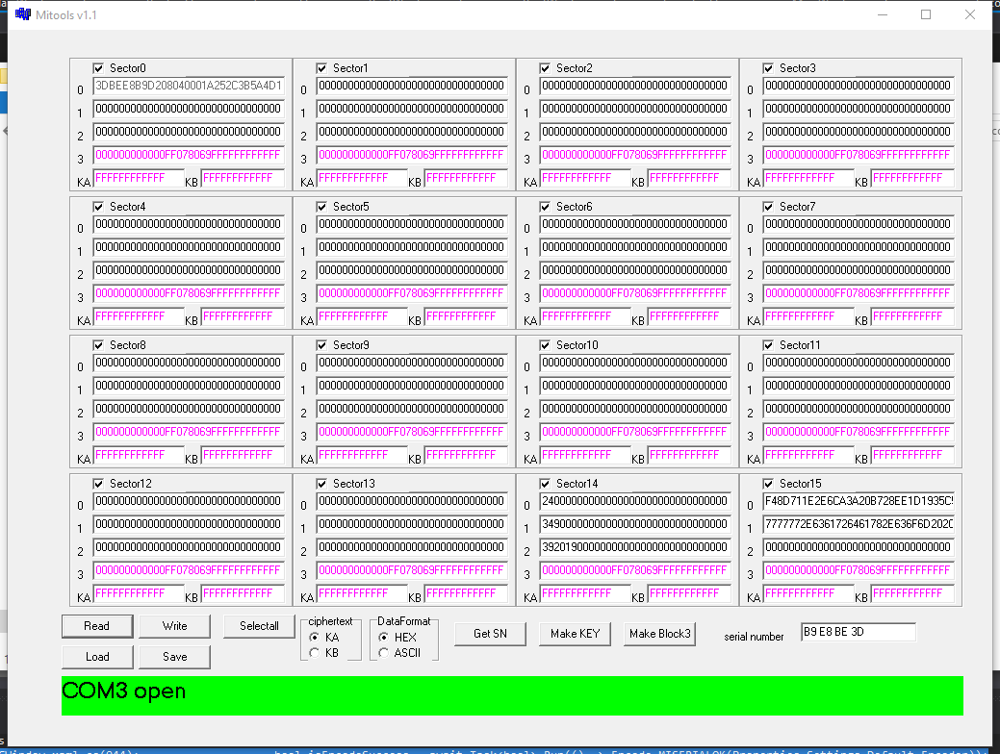
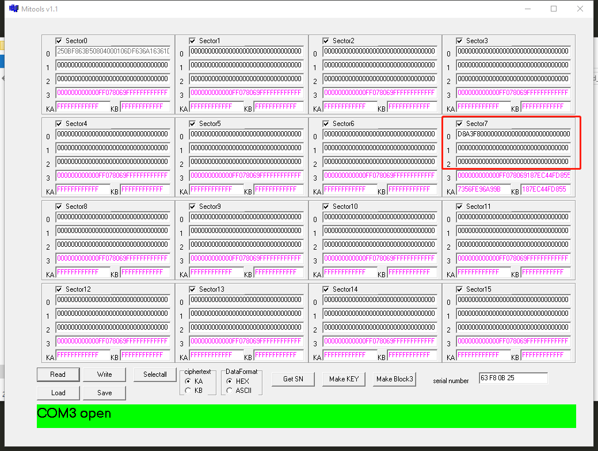
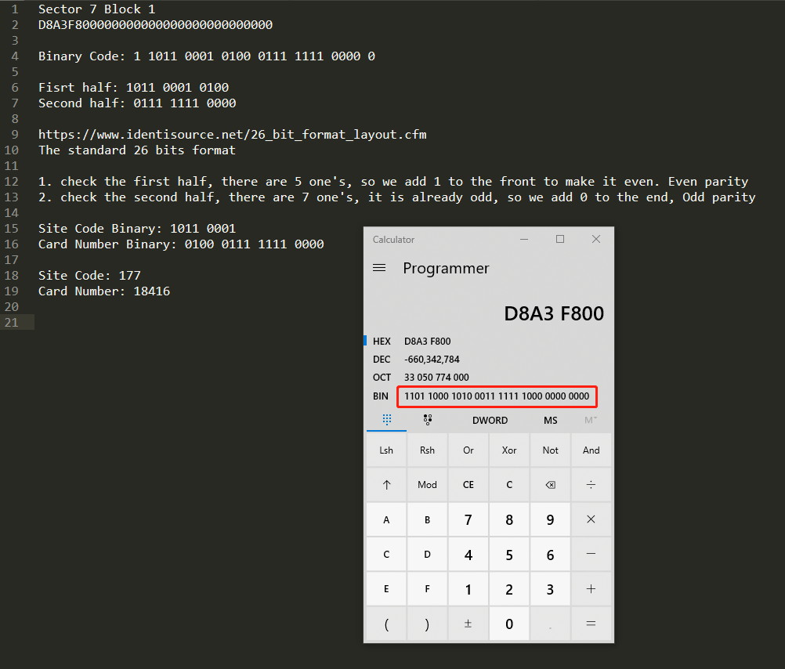

Mifare card read and write
Mifare card families
Mifare卡片有很多种类，每一种卡都有不用的读写方式
- Mifare Classic
- Mifare Plus
- Mifare Ultralight
- Mifare DESFire
Classic and Mitools
Mifare Classic卡是一种卡片类型，它的安全等级不是特别的高，现在已经有可以破解的软件，Mitools就是其中一种。它的界面如下
Mifare卡片总共有16个sector，每一个sector中又有4个block，其中第一个sector是用来卡片生产的过程中记录卡片信息的，一般来说我们不去动他。剩下的15个sector可以给我们用来记录我们想要的信息，其中每个sector的前3个block可以自由使用，而第4个block是用来记录两个密码Key A和Key B。中间的7为则用来记录密码的形式，一般我们也不去动他。密码层在图中用粉色表示。
这是其中一张卡片读取后显示的信息
现在我们来看看怎么从sector7中提取出这张卡片的site code和card number
可以看到第一个block中含有我们需要的信息，而剩下的block2，block3都是0.
我们需要做的就是拿出block1中的信息，这个信息是Hexadecimal也就是16进制的，所以我们先把它变成2进制。1101 1000 1010 0011 1111 1000 0000 0000
因为我们用的是26 bit format 所以取前26位数
除去第一位even parity，取第二位往后8位：1011 0001，换成十进制就是177
再往后取16位：0100 0111 1111 0000. 十进制就是18416
这样我们就得到了site code: 177, card number: 18416
Ultralight card
与Classic相似的是，Ultralight卡也有很多可以读写的分区，只是不叫sector，而叫做page，从第四个到第15个page是提供给使用者读写的，其他则是与卡本身相关的信息。
每一个page可以保存四个byte的信息
需要注意的是，page2的第2，3个byte保存有lock bits，可以lock其他的page，而且一旦lock，就不能在改变回unlock的状态，比如，0是unlock，1是lock，如果把第二个byte中的第4个bit从0改变为1，那么page4就会被lock，我们不再拥有write page4的权利，但是可以read，page2中的lock bit也无法从1再变回成0.
DESFire card
DESFire卡的保护机制更加复杂，其中存储信息的空间叫做application，我们需要先选择正确的application和adpu command，然后伴随sw1, sw2两个parameter，最后还有加上一个expected response length
如果要write，就要再加上想要写入的data和数据长度。随着iOS13对于NFC的开放，使用iphone读写DESFire card有可能实现。